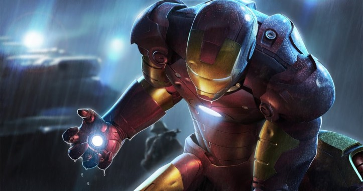

아이언맨은 어벤져스의 멤버이기도 하고, 과학적인 강화 장비를 만드는 것은 거의 항상 토니의 몫이다. 참고로 클래식 시리즈의 아이언 맨의 이명 중 몇 가지는 "골든 어벤져"(황금의 복수자), 혹은 "아머드 어벤저"(갑옷을 입은 복수자)였는데 어벤져스 멤버로서의 아이언맨의 정체성이 잘 드러난다. 호감을 품고 있던 여인인 베서니 케이브가 있지만, 그녀가 떠난 날 업무 볼 때는 멀쩡하다가 혼자 집에서 울고 있는 등, 의외로 센티멘탈하기도 하다. 참고로 베서니는 토니 스타크가 알코올 의존증으로 고생할 때 도와준 사람이기도 하다. 사실 영화판의 자신만만한 모습과 달리 코믹스의 토니 스타크는 종종 자신에 대한 자신감을 잃어버리는 울적한 모습을 보이곤 했다. 스탠 리의 발언에 따르면 여성팬이 많은 히어로라고 한다. v

잘생긴 외모와 천재적인 두뇌와 화려하고 매력적이고 완벽한 겉과 속은 어리고 여리며 고독하고 약하며 많은 문제와 약점들이 고통있는 매력적인 내면 가지고 있으며 재산이 많은 것도 한몫하는 듯하다. 수십 년 이상 연재되며 공식적으로 스토리가 이어져 온 버전들은 물론, 평행세계나 리메이크로 나온 다른 설정의 코믹스들도 수없이 많이 나왔고, 애니판과 게임판, 그 외 여러 미디어 믹스들도 나왔으며, 특히 1966년도 클래식 애니판은 주제가가 매우 유쾌하다. 이 주제가의 멜로디는 실사판 아이언맨 극중에도 흘러 나온다. 오케스트라 버전, 핸드폰 벨소리 버전 등등, 찾아보는 것도 묘미일 듯하다. 이야기를 보면 아이언맨의 기술을 지키기 위해 산업스파이와 싸우는 등 기업 스릴러의 성격이 강하다. 이에 영향을 받은 영화판도 히어로물이자 기업 스릴러라고 봐도 좋을 정도다. 그리고 실사 영화 아이언맨 개봉으로 인해 스파이더맨 과 어깨를 나란히하는 마블 인기캐릭터가 되었다.